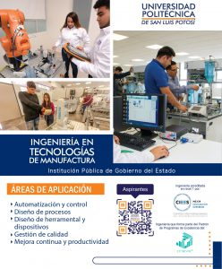

Ingeniería en Tecnologías de Manufactura (ITMA)

Nivel:
Licenciatura
Título otorgado:
Ingeniería en Tecnologías de Manufactura
Duración:
9 Semestres
Descripción carrera:
La carrera de Ingeniería en Tecnologías de Manufactura (ITMA), ha sido diseñada para cubrir diferentes funciones dentro del sector industrial, teniendo como sus tres pilares modulares, la automatización y control de procesos, el diseño avanzado y la administración de procesos. El conocimiento es transmitido a los estudiantes mediante el enfoque de competencias, permitiendo así, mejorar sus habilidades y destrezas tanto sociales como cognitivas para enfrentar los desafíos en diferentes ámbitos laborales. Al inicio de su carrera, se tienen las asignaturas básicas que sustentan estos tres pilares mencionados, donde se establecen las leyes físicas, el razonamiento matemático y lógico, así como, la socialización del estudiante con su entorno.
Plan de estudios

Infraestructura / Recursos
Certificaciones:
- Certificación en NEUMATICA
- Certificación en ELECTRONEUMATICA
- Certificación en HIDRAULICA
- Certificación en ELECTROHIDRAULICA
- Certificación en CONTROLES LÓGICOS PROGRAMABLES (PLC)
- Certificación en SENSORES
- Certificación en ROBOTICA INDUSTRIAL
- Certificación en BUS DE CAMPO ABIERTO Y HOMOLOGADO (REDES DE COMUNICACIÓN INDUSTRIALES)
- Certificación en SISTEMAS FLEXIBLES DE MANUFACTURA
- P.I.C I (PROGRAMACIÓN PARA LA AUTOMATIZACIÓN)
- PROCESOS DE MANUFACTURA I (MAQUINADOS, PAILERÍA Y SOLDADURA)
- PROCESOS DE MANUFACTURA II (PLÁSTICOS)
- CAD/CAM Y MANUFACTURA ASISTIDA POR CONTROL NUMÉRICO COMPUTARIZADO.
- C.N.O.V SISTEMAS DE MEDICION POR COORDENADAS
- MANUFACTURA INTEGRADA POR COMPUTADORA I (MRP/ERP)
- P.I.C III (SISTEMAS DE VISUALIZACIÓN DE PROCESOS SCADA)
- C.N.O.VI (SISTEMAS DE CONTROL DE PROCESOS)
- MANUFACTURA INTEGRADA POR COMPUTADORA II (ELECTRONICA DE POTENCIA)
- FUNDAMENTOS DE INGENIERÍA ELECTRICA Y ELECTRONICA
- INTRODUCCION A LA INGENIERÍA (uso del laboratorio de METROLOGÍA)
- DIBUJO POR COMPUTADORA I (CAD)
- Manejo y Planeación de recursos y procesos II (DISEÑO DE PROCESOS DE MANUFACTURA)
- DISEÑO DE HERRAMENTAL Y DISPOSITIVOS
- DISEÑO PARA MANUFACTURA.
Logros / Distinciones:
- 2° lugar en concurso robótica organizado por la IEEE en Brasil de 2008
- Primer lugar de Labview Robotics Challenge 2012.
- Primer lugar del 4° Torneo Internacional de Robótica “Vex Robotics”, Saltillo 2013 (Categoría Diseño).
- Primer Lugar del 3er Torneo Regional de Robótica Vex-Reeduca, San Luis Potosí 2013 (Categoría Excelencia y Campeón del Torneo).
- Primer Lugar del 2° Torneo Regional de la Academia de Robótica Vex-Reeduca, Aguascalientes 2014 (Categoría Diseño).
- 7 medallas a estudiantes ejemplares otorgadas por la asociación Trayectoria de Éxito.
- 7° lugar del ranking mundial del Campeonato Mundial Vex Robotics en Anaheim, Cal. 2014.
Perfil de egreso
El Ingeniero en Tecnologías de Manufactura será capaz de atender las necesidades emanadas de los procesos de transformación de productos manufacturados, contribuyendo al desarrollo local, regional y/o nacional, a través de las siguientes funciones:
- Desarrollar procesos de manufactura para incrementar la competitividad de la empresa mediante tecnologías adecuadas.
- Utilizar las herramientas Lean manufacturing, para mejorar la productividad y la calidad.
- Desarrollar manipuladores de producción para mejorar la productividad y calidad de la producción.
- Desarrollar la programación de los equipos de Control: PLC y sensores y Robots, así con CNC para cumplir los programas de la planta y satisfacer al cliente.
- Desarrollar programas de mantenimiento para cumplir los programas de la planta y satisfacer al cliente.
- Gestionar sistemas de calidad acordes a los estándares internacionales
- Gestionar sistemas de producción y calidad acordes a los sistemas de empresas de clase mundial.
- Formular proyectos de manufactura desde el punto de vista económico y tecnológico
VALORES, ACTITUDES Y HABILIDADES
- VALORES.-Honestidad; Calidad en el trabajo y Espíritu de Servicio.
- ACTITUDES.- Positiva y de cooperación.
- HABILIDADES.- Capacidad para resolver problemas, Iniciativa y Toma de decisiones, , Espíritu emprendedor
Campo de trabajo
El ingeniero en Tecnologías de Manufactura egresado de la UPSLP adquiere competencias necesarias como para desarrollarse profesionalmente en todas y cada una de las empresas manufactureras como por ejemplo químicas, metalmecánicas, alimenticias, automotrices, aeronáuticas, de fundición, industrialización del hule, plásticos, mineras, farmacéuticas, centros de investigación y desarrollo tecnológico, entre otras.